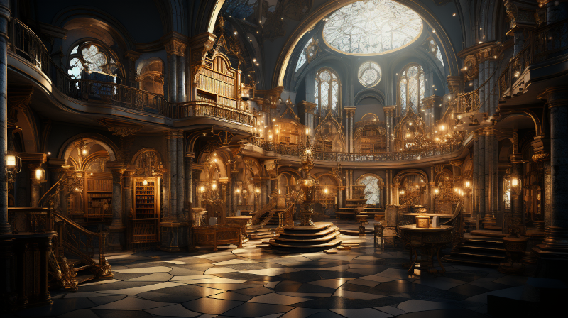

Ornasion Library
☰
Figure 1: The Gate (or entrance) inside Ornasion Library
This is the largest library in Naurrnen. It consists of a large citidel, with a castle and towers. It is primarily run by the Gran Imperio’s Archivist Guild. The citidel consists of thousands of rooms deep under the surface of the city, and far into the chambers above the ground. Most of the transcriptions of the ancient books in Laurië Citime have been purchased and stored at this library.
The Archivist Guild: Guardians of Knowledge
The Archivist Guild is the esteemed institution that serves as the backbone of Ornasion, the Citadel of Wisdom. Established in antiquity, this guild is a collective of the realm’s most distinguished scholars, librarians, and documentarians whose primary mission is to preserve, catalog, and disseminate the vast reserves of knowledge stored within the city. With a focus that transcends mere bookkeeping, the Archivist Guild is committed to the promotion of intellectual curiosity and scholarly exchange across all disciplines.
Members of the guild undergo rigorous training in disciplines ranging from archival science to arcane arts, ensuring they possess the expertise required to maintain the complex web of knowledge housed in Ornasion. These archivists are more than just caretakers; they are mentors, guiding young scholars through the labyrinthine corridors of wisdom, and acting as mediators in intellectual debates and forums.
Once a year, the guild organizes the “Conclave of Quills,” an international symposium that invites scholars, historians, and researchers from far and wide to present their work, fostering an environment of academic collaboration and groundbreaking discoveries.
Additionally, the guild employs an elite force of mage-guards specially trained to safeguard the invaluable treasures of Ornasion. Utilizing a unique blend of martial skill and arcane knowledge, these mage-guards ensure the sanctity and security of one of Naurrnen’s most invaluable resources.
The Archivist Guild is not just an organization; it’s a living testament to Naurrnen’s commitment to the pursuit of knowledge. Through its ceaseless efforts, the guild ensures that the flame of intellectual inquiry continues to burn bright for future generations.